Fairy Tales by Hans Andersen
1924
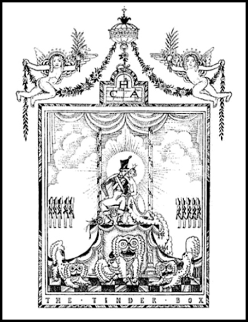
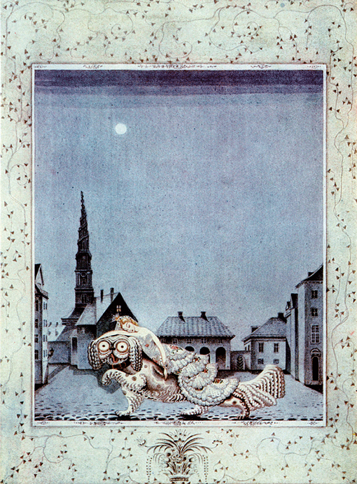
The Tinder Box
In the night the dog came again, took the princess on his back, and ran with her to the soldier
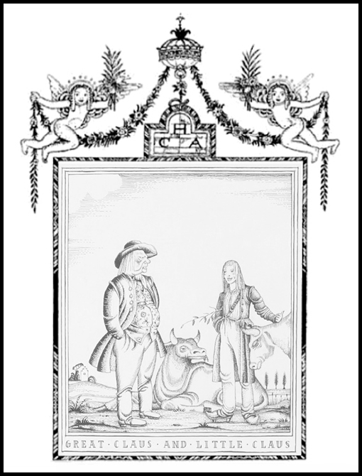
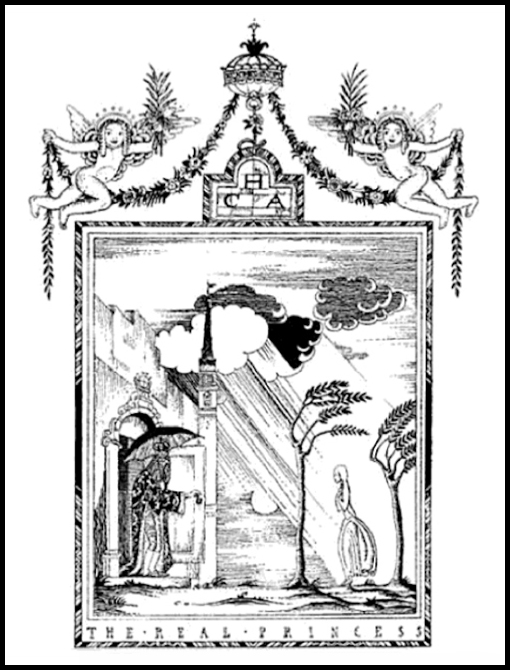
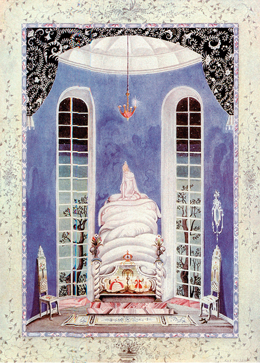
The Real Princess
"Oh very badly indeed!" she replied. "I have scarcely closed my eyes the whole night through.
I do not know what was in my bed."
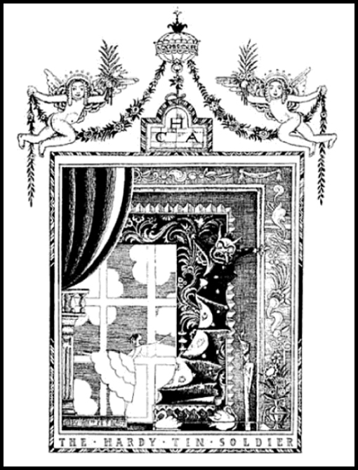
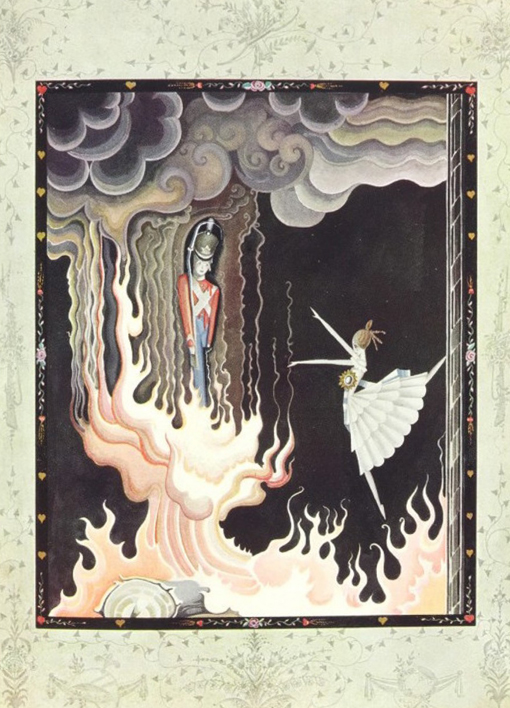
The Hardy Tin Soldier
The draught of air caught the dancer, and she flew like a sylph just into the stove
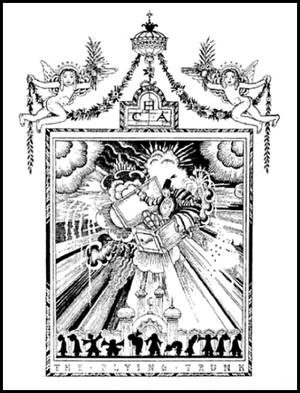
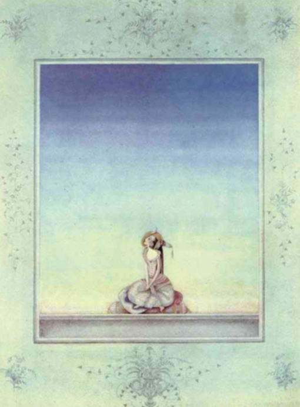
The Flying Trunk
She is waiting still
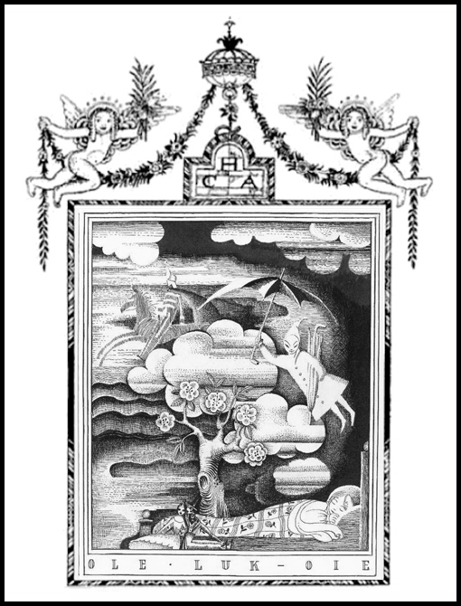
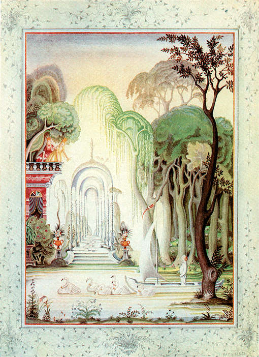
Old Luk-Oie
That was a pleasure voyage. Sometimes the forest was thick and dark,
sometimes like a glorious garden full of sunlight and flowers.
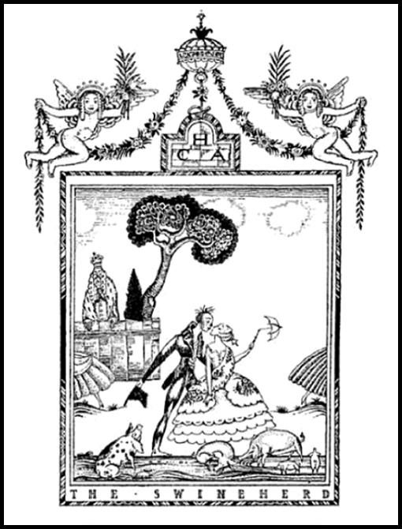
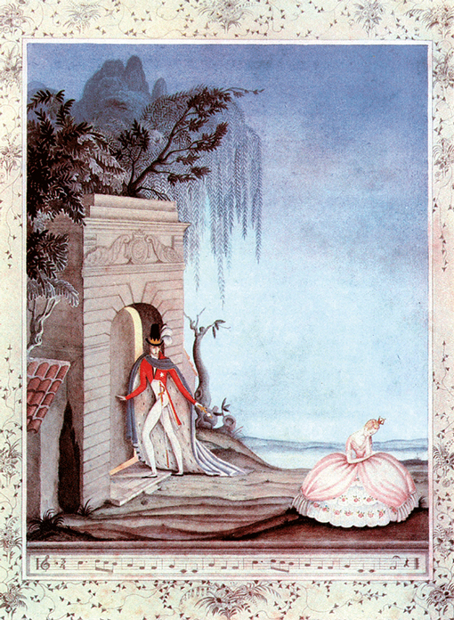
The Swineherd
And then he went into his kingdom and shut the door in her face,
and put a bar on. So now she might stand outside and sing -
"Oh, my darling Augustine, All is lost, all is lost."
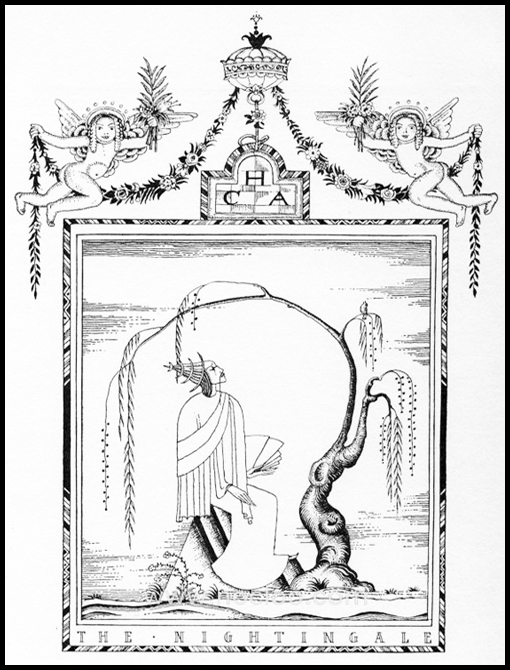
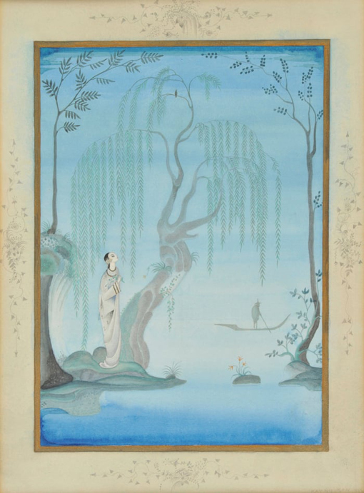
The Nightingale
And when I get back and am tired, and rest in the wood, then I hear the Nightingale sing
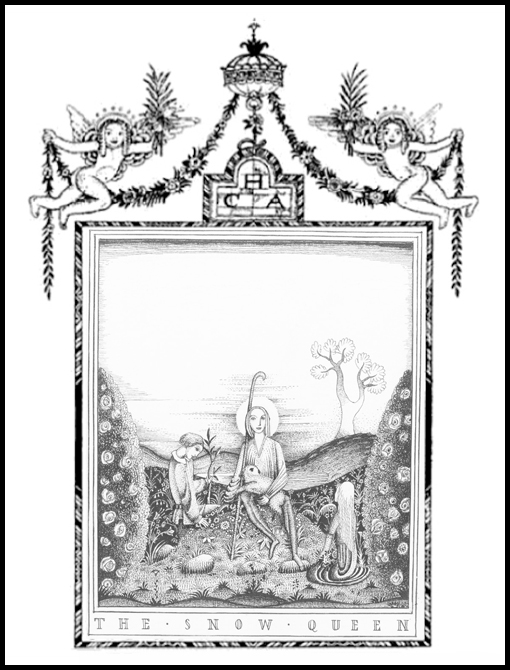
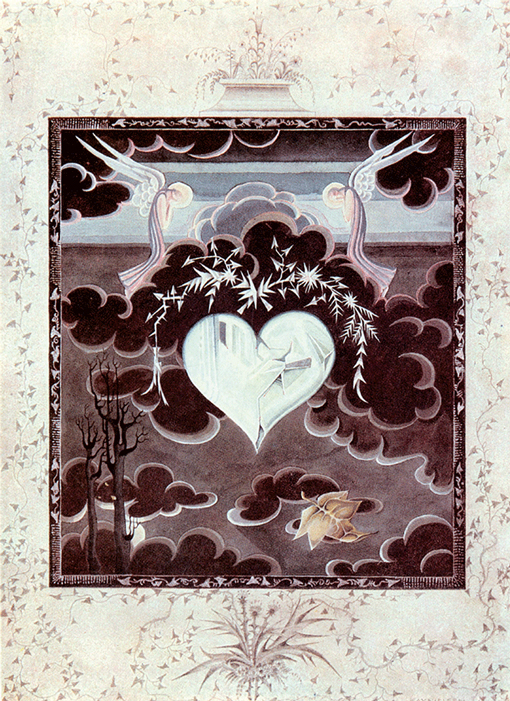
The Snow Queen
A few persons even got a fragment of the mirror into their hearts,
and that was terrible indeed, for such a heart became a block of ice.
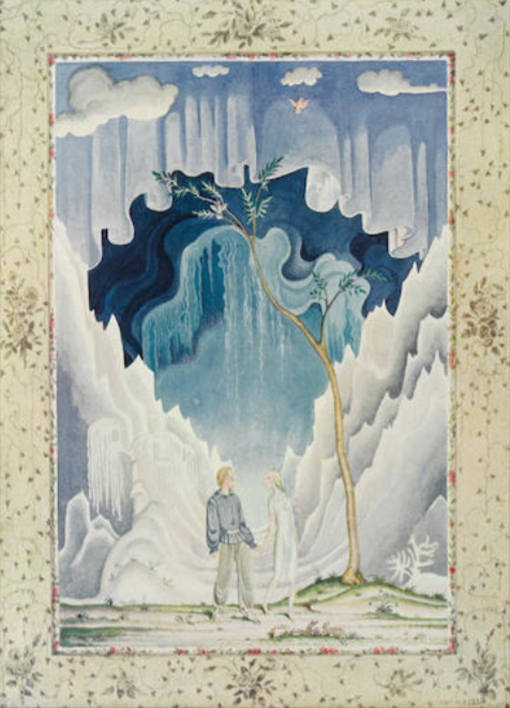
The Snow Queen
But Gerda and Kay went hand in hand, and as they went
it became beautiful Spring, with green and wild flowers.
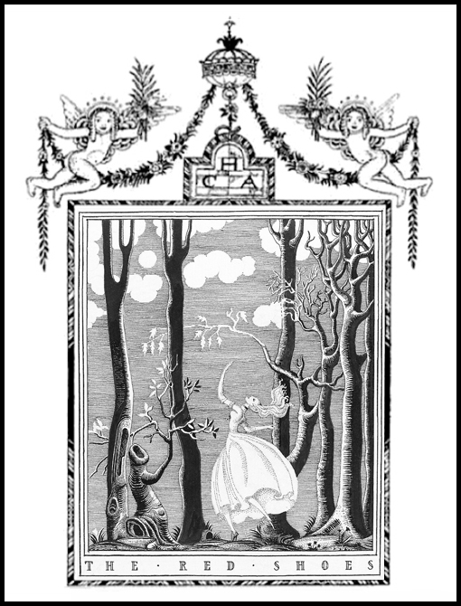
The Red Shoes
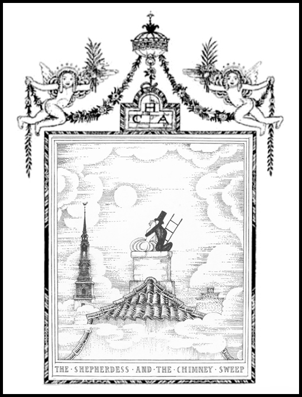
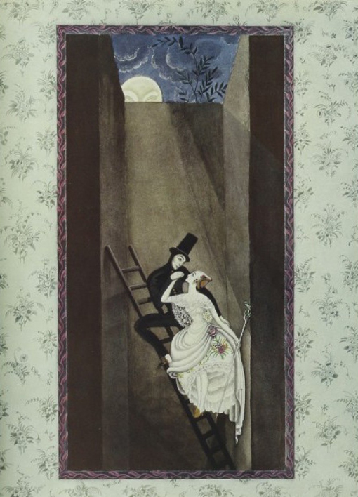
The Shepherdess and the Chimney Sweep
"We'll mount so high that they can't catch us,
and quite at the top there's a hole that leads out into the wide world."
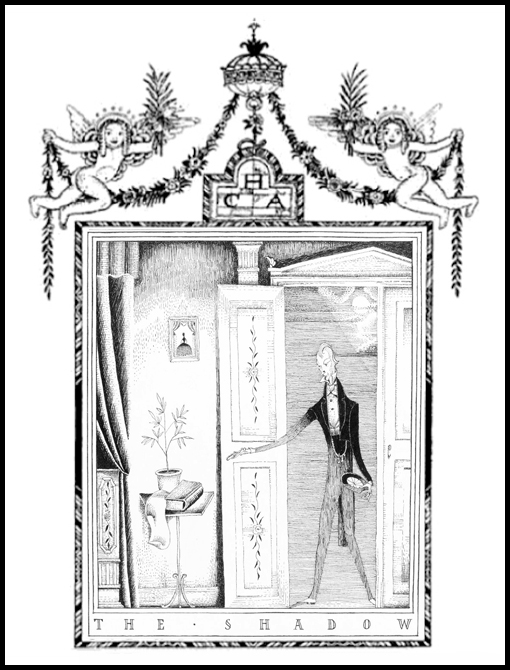
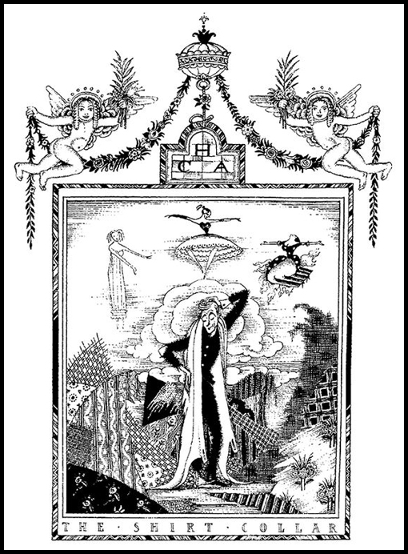
The Shirt Collar
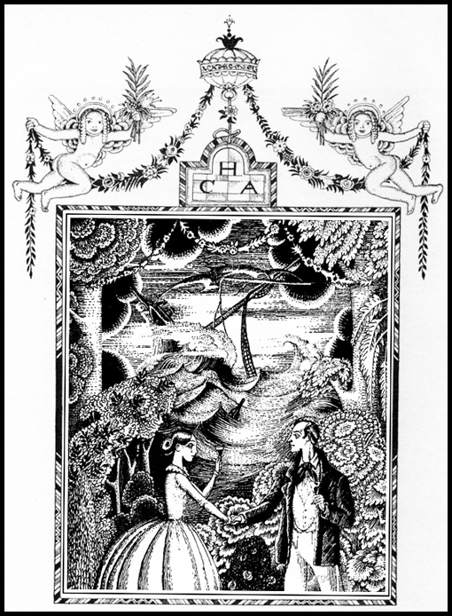
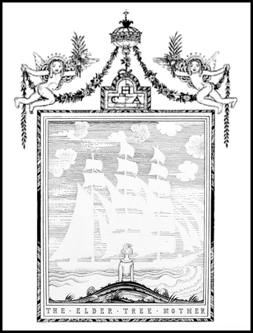
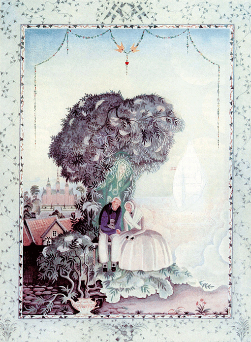
The Elder Tree Mother
And in the midst of the tree sat an old, pleasant-looking woman in a strange dress
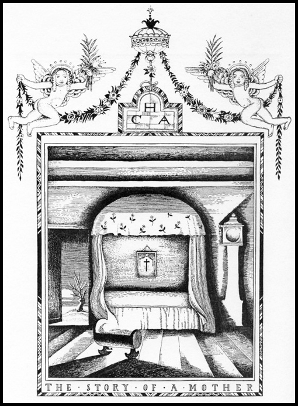
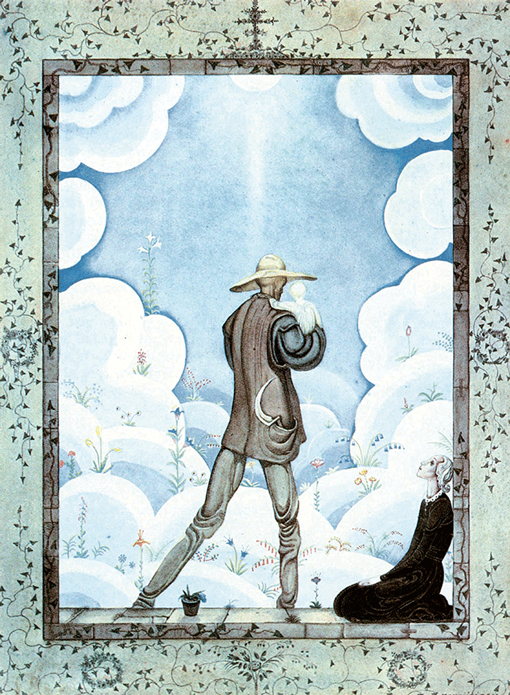
The Story of a Mother
And Death went away with her child into the unknown land